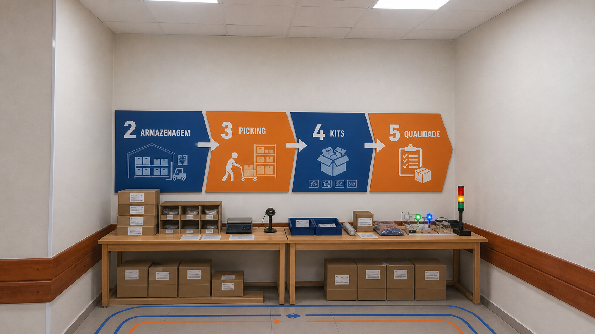

A
Parede operacional
Dois pranchões de 1,80 × 0,70 × 0,75 m organizam E2 Armazenagem, E3 Picking, E4 Kits e E5 Qualidade.
- 12 caixas kraft e colmeia de 9 nichos
- 2 bandejas, fichas, etiquetas, balança e embalagens
- 1 leitor simbólico + 1 semáforo Arduino
- 4 placas modulares de 0,70 × 0,70 m